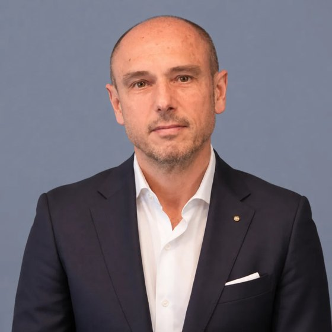

Hadi Health in una pagina
Hadi Health è l'iniziativa con cui la Fondazione bioERGOtech porta il proprio software nelle aziende sanitarie e nelle regioni. Vende e gestisce due prodotti che hanno lo stesso acquirente: Frankura, che prepara i casi oncologici per i gruppi multidisciplinari, e VIS Pharma Compass, che mostra dove la spesa farmaceutica può reagire prima.
di lavoro medico liberate ogni anno all'ASL VCO dai moduli A, B e C di Frankura, pari a {{vco_value}}.
di valore annuo, scenario prudenziale ({{vis_minimum}} nel minimo), stimato da VIS sui dati reali delle quattro ASL abruzzesi.
nella nostra rete: {{net_beta}} beta tester e {{net_direct}} contatti diretti in {{net_regions_touched}} regioni, territori con {{net_pop}} di residenti.
valore annuo potenziale dei due prodotti in quei territori, scenario prudenziale ({{net_total_lo}} nel minimo).
- Frankura: accordo di pilot firmato con l'ASL VCO sul percorso oncologico, dalla visita al gruppo interdisciplinare.
- VIS Pharma Compass: prototipo funzionante su {{vis_records}} record di erogazione delle quattro ASL abruzzesi; beta test con ASL Caserta e ASL Salerno.
- A giugno 2026: circa {{signed}} di contratti firmati e circa {{pipeline}} di pipeline in fase avanzata.
- Hadi Health è oggi un progetto della Fondazione, non ancora una società.
- Enti che adottino i prodotti partendo da un'analisi diagnostica o da un pilot misurato.
- Partner industriali e tecnologici per l'integrazione con i sistemi ospedalieri e la distribuzione.
- Partner clinici e scientifici per la validazione e il percorso di marcatura CE di Frankura.
- Partner finanziari con cui costituire la società e sostenerne i primi tre anni.
I valori economici sono stime costruite su misure fatte con due enti e su dati pubblici. Metodo e ipotesi sono nel capitolo 7 e in appendice.
Dal team ai progetti che accettiamo
La Fondazione bioERGOtech è nata a Taranto nell'aprile 2025 e lavora tra Taranto e Zurigo. Il team riunisce ingegneri biomedici, biostatistici, clinici, giuristi ed economisti. Non partiamo da una tecnologia: partiamo da una persona che ha un problema, ne risponde e non riesce a risolverlo con il tempo e i dati che ha davanti.
Guardando i progetti che abbiamo accettato, il filo comune non è la pianificazione delle terapie, che molti dichiarano di fare. È il tempo. Ospedali e regioni possiedono già gran parte dei dati che servono per decidere, ma li leggono tardi. Un oncologo ricopia la storia clinica dalla scheda di accoglienza a quella del gruppo multidisciplinare. Una nota di credito dei registri AIFA scade prima di essere richiesta. Un biosimilare è disponibile da mesi, ma la spesa resta sul farmaco originatore. In ciascun caso il dato esiste; manca il tempo per trasformarlo in una decisione.
La frase che unisce Fondazione e Hadi Health
Tre criteri per accettare un progetto
Il problema ha un responsabile
Un clinico, un farmacista o un dirigente lo vive ogni giorno, ce lo porta e resta titolare della decisione. Il software la prepara, non la sostituisce.
I dati esistono già
Lavoriamo sui flussi e sui sistemi che l'ente usa oggi. Non chiediamo di produrre dati nuovi: rendiamo leggibili in tempo quelli che oggi arrivano tardi.
Il ritardo si misura
Prima e dopo l'intervento, in ore di lavoro e in euro, con numeri che il committente può verificare. Se l'effetto non si può misurare, non lo proponiamo.
Due ruoli distinti
- Individua i bisogni con chi li vive: medici, farmacisti, direzioni.
- Fa ricerca e validazione scientifica, pubblica i risultati.
- Cura la rete clinica, la formazione e i progetti finanziati.
- Porta i prodotti fino all'uso quotidiano negli enti.
- Firma i contratti con aziende sanitarie e regioni e ne risponde.
- Gestisce conformità (GDPR, MDR, AI Act), assistenza e misura dell'effetto.
Una fondazione del Terzo settore può svolgere attività commerciali solo in via secondaria e strumentale (D.Lgs. 117/2017, art. 6). Vendere e gestire software clinico per enti pubblici richiede una struttura d'impresa, con responsabilità contrattuali, assicurative e di certificazione proprie. Hadi Health è quella struttura: oggi un progetto della Fondazione, domani una società. Hadi, in arabo, significa guida. Una guida conosce la strada e accorcia il cammino; la meta la sceglie chi viaggia.
Lo stesso acquirente, due ritardi
Le aziende sanitarie e le regioni pagano sia il tempo dei clinici sia i farmaci. In entrambi i casi hanno già i dati, ma li usano in ritardo.
La spesa farmaceutica supera il tetto in ogni regione
Nel 2025 la spesa per acquisti diretti delle strutture pubbliche (farmaci di classe A e H, al netto dei payback) è stata di {{italy_net}}, pari al {{italy_share}} del fondo sanitario nazionale contro un tetto dell'8,30%. Lo sforamento è di {{italy_overrun}} e nessuna regione rientra nel tetto. La Campania ha lo sforamento maggiore in euro, {{campania_overrun}}.
Molte opportunità di risparmio sono già nei dati che l'azienda produce: le scadenze brevettuali, i biosimilari disponibili, le note di credito dei registri AIFA. Il problema è il ritardo con cui l'organizzazione le vede e reagisce.
Il tempo dei medici finisce nella documentazione
In Italia si stimano circa {{italy_cases}} nuove diagnosi di tumore all'anno, seguite da {{italy_units}} unità di oncologia medica. Tra il 2012 e il 2022 i posti letto pubblici di oncologia medica sono scesi da 5.262 a 4.159.
Ogni nuovo paziente passa dal Centro Accoglienza e Servizi (CAS) al Gruppo Interdisciplinare di Cure (GIC), e ogni passaggio richiede di ricopiare e riassumere dati che esistono già. All'ASL VCO questo lavoro vale {{vco_hours}} ore di medico all'anno che si possono liberare: circa sette mesi di un medico a tempo pieno.
Le regioni della rete: spesa in percentuale del fondo sanitario, 2025
Acquisti diretti di farmaci di classe A e H al netto dei payback, sul fondo sanitario di ciascuna regione (AIFA, consuntivo 2025). Accanto a ogni barra lo sforamento in euro. Tutte le {{regions_above}} regioni in cui abbiamo un interlocutore superano il tetto, da Lombardia a Sardegna.
Perché adesso
Le regole sono chiare
La legge 132/2025 sull'intelligenza artificiale, in vigore dal 10 ottobre 2025, stabilisce all'art. 7 che in sanità l'IA è di supporto e la decisione resta al medico. È il principio su cui sono costruiti entrambi i prodotti.
I medici la usano già
Secondo l'Osservatorio Sanità Digitale del Politecnico di Milano il 61% degli specialisti usa l'IA generativa, quasi sempre su piattaforme generaliste. Gli enti hanno bisogno di strumenti conformi, dentro i loro sistemi.
Il PNRR finisce
Un terzo delle strutture pubbliche teme di ridimensionare i progetti digitali dopo il PNRR, e la metà indica le risorse limitate come primo ostacolo. Servono strumenti che si ripaghino nel bilancio corrente.
Frankura: il percorso oncologico, preparato
Frankura lavora sopra il software che l'ospedale usa già e segue il paziente dalla prima visita al referto del gruppo multidisciplinare. Non sostituisce il giudizio clinico: lo prepara e lo struttura.
La visita
Registra la visita CAS e ambulatoriale e compila la scheda nella cartella oncologica.
Dal CAS al GIC
Trasferisce la storia clinica nella scheda GIC, senza ricopiature e senza dati mancanti.
La sintesi del caso
Una pagina con le opzioni indicate dalle linee guida AIOM ed ESMO. Il gruppo la conferma, la modifica o la respinge.
Il referto
Referti standard e interoperabili (FSE 2.0, HL7 FHIR, PDF/A) per il medico di famiglia.
La comunicazione
Rende visibile il lavoro della struttura a medici di famiglia, reti e bandi.
Il caso dell'ASL VCO
L'ASL VCO gestisce ogni anno {{vco_cas}} schede CAS, {{vco_visits}} visite oncologiche e {{vco_gic}} casi discussi nei GIC. Con un costo orario del personale medico di {{vco_hourly}}, i moduli A, B e C liberano le ore indicate nella tabella. Ogni modulo si attiva da solo. I moduli D ed E portano benefici di qualità e di reputazione che non abbiamo quantificato.
Con l'ASL VCO abbiamo firmato un accordo di pilot; il referente è il dott. Mario Franchini, Direttore della SOC Oncologia. Nel pilot misuriamo queste grandezze prima e dopo l'installazione.
| Modulo | Ore/anno | Valore/anno |
|---|---|---|
| Totale | {{vco_hours}} h | {{vco_value}} |
Direzione sanitaria, oncologia e rete oncologica regionale. La Rete Oncologica del Piemonte e della Valle d'Aosta conta 36 CAS e 283 GIC: una sola rete offre decine di punti di installazione con lo stesso percorso.
Licenza per ospedale da {{frk_low}} a {{frk_high}}, in base ai moduli attivati, alla dimensione della struttura e alle risorse necessarie, più un canone annuo di gestione.
Le soluzioni più diffuse trascrivono la visita. Frankura prepara il lavoro del gruppo interdisciplinare, che è la parte più lunga del percorso e la più difficile da sostituire.
VIS Pharma Compass: dove la spesa può reagire prima
VIS Pharma Compass è uno strumento di analisi in sola lettura per la direzione di farmacia, la direzione sanitaria e il servizio farmaceutico regionale. Riconcilia acquisti ed erogazioni con il bilancio, segnala scadenze brevettuali e biosimilari non usati, confronta le aziende della stessa regione e recupera le note di credito dei registri AIFA non richieste in tempo.
Il caso dell'Abruzzo
Il prototipo funziona su dati reali delle quattro Aziende Sanitarie abruzzesi: {{vis_records}} record di erogazione, {{vis_perimeter}} di spesa annua. Non c'è un contratto: è una verifica fatta sui loro dati. Il referente regionale è il dott. Alberto Costantini, Dirigente del Servizio Assistenza Farmaceutica.
La tabella riporta il valore annuo per fase, nello scenario prudenziale. Lo scenario minimo è la metà, {{vis_minimum}}. In più, VIS restituisce all'attività di governo {{vis_days}} giornate di lavoro dei farmacisti all'anno ({{vis_hours}} ore): poco più di tre mesi di un dirigente farmacista a tempo pieno.
VIS non è un dispositivo medico: non interviene su decisioni relative al singolo paziente e non sostituisce il gestionale di farmacia né la cartella clinica.
| Fase | Valore/anno |
|---|---|
| Totale prudenziale | {{vis_prudent}} |
Listino
| Voce | Azienda singola | Configurazione regionale |
|---|---|---|
| Analisi diagnosticaTre settimane sui dati dell'ente: quadratura, lista delle opportunità in euro, relazione di metodo | {{vis_diagnostic}} | {{vis_diagnostic}} |
| Cruscotto e radar scadenze (M1+M2) | {{vis_asl_m12}}/anno | |
| Con registri, File F e flussi (M1+M2+M3) | {{vis_asl_m123}}/anno | |
| Configurazione completaIn regione comprende il confronto fra Aziende (M6) | {{vis_asl_full}}/anno | {{vis_reg_base}}/anno più {{vis_reg_per}} per azienda |
| Attivazione, una tantum | {{vis_asl_activation}} | {{vis_reg_act}} più {{vis_reg_act_per}} per azienda |
Il prezzo è per modulo e per perimetro, non per utente. Il canone è fisso, fatturato a trimestre posticipato. Al sesto mese si verificano gli indicatori concordati: se non sono raggiunti, l'ente recede senza oneri. Il rischio per l'ente è limitato al canone di un semestre.
Perché Frankura e VIS stanno nella stessa impresa
I due prodotti risolvono problemi diversi, ma per lo stesso ente, con lo stesso metodo e con le stesse regole sui dati. Ogni contratto apre la porta all'altro prodotto.
| Frankura | VIS Pharma Compass | |
|---|---|---|
| Chi compra | Direzione generale e sanitaria dell'ASL o dell'ospedale; rete oncologica regionale | Direzione generale dell'ASL; servizio farmaceutico regionale |
| Chi lo usa | Oncologi, componenti dei GIC, personale del CAS | Farmacisti, controllo di gestione, direzione sanitaria |
| Dati di partenza | Cartella oncologica, schede CAS e GIC, referti | Flussi di acquisto ed erogazione, registri AIFA, bilancio |
| Effetto misurato | Ore di lavoro medico liberate per paziente | Euro di spesa e giorni di reazione, per opportunità |
| Qualificazione | Moduli A, B e D gestionali; modulo C da trattare come dispositivo medico | Non è un dispositivo medico |
| Prezzo | Licenza da {{frk_low}} a {{frk_high}} per ospedale, più canone | Da {{vis_asl_m12}} a {{vis_asl_full}} l'anno per azienda; regione da {{vis_reg_base}} |
| Stato | Accordo di pilot firmato con l'ASL VCO | Prototipo sui dati delle quattro ASL abruzzesi; beta test a Caserta e Salerno |
Un solo quadro sui dati
L'ente resta titolare del trattamento e Hadi Health agisce come responsabile (GDPR, art. 28). Elaborazione nell'Unione Europea o nel data center dell'ente, registro degli accessi, restituzione dei dati a fine contratto senza costi di uscita.
Un solo percorso d'acquisto
Lo stesso ufficio acquisti, la stessa valutazione d'impatto, le stesse soglie del codice dei contratti. Il secondo prodotto costa all'ente molto meno tempo amministrativo del primo.
Un ponte naturale
Il modulo M5 di VIS misura gli sprechi di allestimento dei farmaci oncologici. Oncologia e farmacia guardano gli stessi pazienti da due lati: la farmacia che adotta VIS conosce già l'oncologia che adotterà Frankura, e viceversa.
Un esempio: l'ASL Salerno con entrambi i prodotti
residenti; circa {{sal_patients}} nuovi pazienti oncologici e {{sal_spend}} di spesa farmaceutica all'anno, stimati.
valore annuo di VIS nello scenario prudenziale, {{asl_salerno_vis_lo}} nel minimo.
valore annuo di Frankura, pari a {{asl_salerno_frk_h}} di lavoro medico.
il costo per l'ASL nel primo anno, {{sal_cost_after}} dal secondo, a fronte di un valore da {{sal_value_lo}} a {{sal_value_hi}} l'anno.
VIS in configurazione completa per azienda singola ({{vis_asl_full}} l'anno più {{vis_asl_activation}} di attivazione); Frankura con una licenza da {{frk_mid}} e un canone del {{frk_fee_share}} dal secondo anno. Stime con il metodo del capitolo 7.
Chi conosciamo, e dove
Abbiamo {{net_entities}} interlocutori in {{net_regions_touched}} regioni, che possiamo raggiungere senza intermediari: {{net_beta}} beta tester e {{net_direct}} contatti diretti. Sono {{net_regions}} regioni, {{net_asl}} aziende sanitarie e {{net_hospitals}} ospedali.
residenti nei territori della rete, il {{net_pop_share}} della popolazione italiana.
di spesa farmaceutica annua nei territori della rete (AIFA 2025, lordo).
tre enti provano i prodotti oggi; gli altri dodici li conosciamo e li possiamo coinvolgere da subito.
Confini: ISTAT, via openpolis (CC BY 4.0). I punti delle regioni sono posti all'interno del territorio regionale; quelli di ASL e ospedali sulla città.
Gli enti, uno per uno
I ruoli dei referenti sono quelli pubblicati dagli enti a ottobre 2026. Dove l'ente non ha ancora indicato un prodotto, proponiamo entrambi.
{{table_network}}Quanto possono risparmiare i nostri clienti
Partiamo da due misure fatte sul campo, una per prodotto, e le portiamo sugli altri territori con un dato pubblico che ne spiega la scala.
In Abruzzo il valore prudenziale è di {{vis_prudent}} su {{vis_perimeter}} di spesa: {{vis_per_million_prudent}} per ogni milione di euro di spesa ({{vis_per_million_minimum}} nel minimo). Applichiamo questo rapporto alla spesa farmaceutica 2025 di ciascuna regione (AIFA, classi A, H e C, al lordo dei payback). Per un'azienda sanitaria usiamo la quota della regione in proporzione ai residenti.
All'ASL VCO il valore è di {{vco_value}} su {{vco_cas}} nuovi pazienti oncologici: {{frk_per_patient}} e {{frk_hours_per_patient}} ore di medico per paziente. Applichiamo questi valori ai nuovi casi di tumore di ciascuna regione (AIRTUM). Verifica: l'ASL VCO registra {{vco_cas_rate}} schede CAS ogni 1.000 residenti, il Piemonte {{piemonte_rate}} nuovi casi ogni 1.000.
Valore annuo per ente
{{table_value}}In evidenza il prodotto in discussione con ciascun ente. ASL VCO (Frankura) e Regione Abruzzo (VIS) sono le misure di partenza; gli altri valori sono stime arrotondate.
Il valore della rete e dell'Italia
Nei grafici ogni territorio compare una sola volta: le ASL di una regione che è già nella rete sono comprese nel valore della regione, e gli ospedali non sono sommati. Così i totali non contano due volte lo stesso euro. Per un ospedale il valore dipende dai suoi volumi: Frankura vale circa {{frk_per_1000}} e {{frk_hours_per_1000}} ore di medico l'anno ogni 1.000 nuovi pazienti oncologici.
VIS Pharma Compass, valore annuo
{{bars_vis}}Frankura, valore annuo e ore di medico
{{bars_frk}}all'anno nello scenario prudenziale, {{net_vis_lo}} nel minimo.
all'anno, pari a circa {{net_frk_hours}} ore di lavoro medico restituite alla clinica.
il valore annuo potenziale dei due prodotti nei territori della rete, scenario prudenziale; {{net_total_lo}} nel minimo.
Su scala nazionale
all'anno: il valore di VIS sulla spesa farmaceutica italiana per acquisti diretti ({{italy_gross}} lordi nel 2025).
all'anno: il valore di Frankura su circa {{italy_cases}} nuove diagnosi, pari a {{italy_frk_hours}} ore di lavoro medico.
Come guadagniamo
Canoni fissi e licenze, non quote del risparmio. Il valore per l'ente è un argomento a sostegno della decisione, non una parte del prezzo.
Proporre a un ente pubblico di pagare una quota del risparmio non ha oggi una base contabile né un precedente nella sanità italiana: il risparmio di un'azienda confluisce in gran parte nella posizione regionale, il bilancio non ha una voce per remunerarlo e servirebbe un certificatore indipendente. Per questo VIS ha un canone fisso con recesso al sesto mese, e Frankura una licenza per ospedale con un canone di gestione.
Valore e canone, ente per ente
{{table_fees}}Canoni VIS da listino, IVA esclusa. Per le ASL sotto 300.000 residenti la configurazione più adatta è M1+M2. Nello scenario minimo il valore supera il canone in ogni ente, da {{mult_min}} ({{mult_min_name}}) a {{mult_max}} ({{mult_max_name}}). In Abruzzo basta realizzare il {{vis_breakeven}} dello scenario prudenziale perché il servizio si ripaghi.
Uno scenario per i primi tre anni
Lo scenario è illustrativo: il numero di clienti è un'ipotesi, i prezzi sono quelli di listino. Ipotizziamo che i beta tester diventino clienti nel 2027, che una regione adotti VIS nel 2028 e una seconda nel 2029, e che Frankura arrivi a {{scenario_centres}} centri oncologici in tre anni. La licenza di Frankura vale {{frk_low}} all'ASL VCO e {{frk_mid}} negli altri centri; il canone annuo di gestione è il {{frk_fee_share}} della licenza, dall'anno successivo all'installazione.
A fine 2029 i ricavi ricorrenti valgono circa {{rec_total}} l'anno ({{rec_vis}} da VIS, {{rec_frk}} dai canoni di Frankura). Il conto economico completo, con i costi di personale, infrastruttura e certificazione, sarà costruito con i partner al momento della costituzione della società.
Il mercato e chi c'è già
spesa italiana in sanità digitale nel 2025, +9% sul 2024 (Politecnico di Milano).
la parte spesa dalle strutture sanitarie nel 2024; {{digital_regions}} dalle regioni.
spesa farmaceutica delle strutture pubbliche nel 2025 (OsMed).
la Missione Salute del PNRR, che ha finanziato la digitalizzazione di cui i nostri prodotti si servono.
VIS Pharma Compass
| Chi | Cosa fa | Differenza |
|---|---|---|
| IQVIA ItaliaFarma360 | Raccoglie i consumi di tutte le aziende della Regione Calabria e fornisce cruscotti di spesa, senza costi per la Regione (decreto 14885/2025). | Un concorrente a prezzo zero. VIS risponde con opportunità quantificate in euro per l'azienda e con un recesso al sesto mese. |
| Maps HealthcareBI Health | Business intelligence per aziende sanitarie e regioni, forte nel Lazio. BI Health è stata acquisita da Maps nel 2026 per 3,7 milioni di euro. | Conferma che il segmento ha valore. VIS è costruito sul percorso farmaceutico, non su una piattaforma generale. |
| Cineca ARNO, CliCon | Banche dati di popolazione e analisi retrospettive per ASL e regioni, soprattutto a fini di studio. | VIS lavora nell'anno in corso, con allerte e proiezioni, per chi deve decidere. |
| Strumenti pubbliciAIFA OsMed, società regionali | Dati aggregati gratuiti e sistemi interni come LAZIOcrea. | Utili per il confronto nazionale, non per agire sulla singola azienda. |
Frankura
| Chi | Cosa fa | Differenza |
|---|---|---|
| Trascrizione della visitaTandem Health, Microsoft Dragon Copilot, Nabla, Heidi, Corti con Dedalus, MioDottore | Ascoltano la visita e scrivono la nota. Tandem ha raccolto 100 milioni di dollari nel 2026; Corti è integrato nel software di Dedalus, tra i principali fornitori di cartelle cliniche ospedaliere in Italia. | Coprono il modulo A, che diventerà una funzione standard. Frankura punta sui moduli B e C, il lavoro per il GIC. |
| Software per tumor boardRoche navify, Siemens AI-Pathway Companion, GE CareIntellect, Microsoft con Oxford | Aggregano i dati del paziente per la discussione multidisciplinare; alcuni propongono passi successivi. | Costruiti su altri sistemi sanitari. Frankura segue il percorso CAS e GIC delle reti oncologiche italiane e le linee guida AIOM. |
| Startup italianeReportAId, Alfadocs | Strutturano referti o note, soprattutto in ambito privato e ambulatoriale. | Non coprono il percorso oncologico dall'accoglienza al referto del GIC. |
Come un ente ci compra
Ogni contratto parte da una prova sui dati dell'ente, rispetta le soglie del codice dei contratti e cresce dall'azienda alla regione.
La prova
VIS: analisi diagnostica di tre settimane, {{vis_diagnostic}}, senza installazione. Frankura: pilot misurato prima e dopo, come all'ASL VCO.
L'azienda
Contratto con la singola azienda per affidamento diretto, sotto la soglia di {{direct_award}} (D.Lgs. 36/2023, art. 50) calcolata sul valore complessivo.
La verifica
Attivazione in novanta giorni. Al sesto mese si controllano gli indicatori concordati; se non sono raggiunti, l'ente recede senza oneri.
La regione
Quando il perimetro cresce: procedura negoziata o accordo quadro regionale, con il confronto fra aziende come funzione centrale.
Il ricorso ripetuto all'affidamento diretto verso lo stesso fornitore per restare sotto soglia è vietato. Presentiamo fin dall'offerta il percorso amministrativo corretto.
L'ordine in cui procediamo
Dai beta tester ai contratti
ASL Caserta e ASL Salerno passano da beta test a contratto VIS; l'ASL VCO dal pilot alla licenza di Frankura. Analisi diagnostiche con AULSS 9, AUSL Modena e ASL Taranto.
La prima regione
Con due ASL campane attive e i dati abruzzesi già analizzati, proponiamo la configurazione regionale in Abruzzo o in Campania. Frankura si estende nella Rete Oncologica piemontese.
La seconda regione
Liguria e Puglia, dove abbiamo già un referente regionale o più enti nella rete. Gli ospedali privati accreditati della rete come clienti diretti.
Come troviamo i clienti
- Contatti diretti con direttori generali, farmacisti e oncologi: sono i {{net_entities}} enti di questo piano.
- La rete della Fondazione: i consulenti, le società scientifiche, i progetti di ricerca con ospedali e università.
- Congressi di settore per farmacisti ospedalieri e oncologi, dove la misura fatta in un ente è l'argomento più forte per il successivo.
Chi siamo

Guido Putignano
Ingegnere biomedico, esperienze a ETH Zurigo, Harvard e MIT.

Domenica Leone
Avvocata. Segue organizzazione, aspetti legali e conformità.

Olufemi Olusola
Biostatistico con dieci anni di esperienza.

Saria Miccoli
Designer. Cura l'identità visiva e la comunicazione.

Mario Tagarelli
Segue finanza, bandi e rendicontazione.
Consulenti

Daniela Marotto
Reumatologa, Collegio Reumatologi Italiani (CReI)

Pasquale Persico
Market access, Gilead Sciences

Roberto De Ponti
Managing Director, 3B Future Health Fund
Consiglio della Fondazione: Guido Putignano, Domenica Leone e Carmine Pisano.
Le competenze che aggiungiamo
Qualità e regolatorio
Sistema qualità ISO 13485 e marcatura CE del modulo C di Frankura.
Vendite alla PA
Gare, accordi quadro e rapporti con le centrali d'acquisto regionali.
Integrazione
HL7 FHIR e connettori verso cartelle cliniche e gestionali di farmacia.
Farmacia ospedaliera
Un farmacista senior che accompagni le direzioni nell'uso di VIS.
Governance
Oggi Hadi Health è un progetto della Fondazione bioERGOtech ETS, senza personalità giuridica propria. Il passo successivo è costituire una società che firmi i contratti, ne risponda e regga il percorso di certificazione di Frankura.
Il rapporto tra Fondazione e società sarà regolato da un accordo su proprietà intellettuale, uso dei dati e del nome. La Fondazione resta il luogo della ricerca e della validazione; la società quello dei prodotti e dei contratti. Struttura societaria e ingresso dei partner si definiscono insieme a loro.
Cosa può andare storto, e cosa facciamo
| Rischio | Come lo gestiamo |
|---|---|
| Frankura come dispositivo medico | Il modulo C propone le opzioni delle linee guida e rientra con ogni probabilità nella regola 11 del Regolamento (UE) 2017/745: lo trattiamo come dispositivo di classe IIa, con sistema qualità ISO 13485, valutazione clinica e organismo notificato. Come sistema di IA ad alto rischio, segue anche il Regolamento (UE) 2024/1689, con obblighi dal 2 agosto 2027. I moduli A, B e D organizzano dati e documenti e si possono adottare prima; una valutazione regolatoria formale confermerà questa lettura. |
| Tempi degli acquisti pubblici | Analisi diagnostica e affidamento diretto sotto soglia per partire; procedura negoziata o accordo quadro solo quando il perimetro cresce. Il recesso al sesto mese abbassa la soglia della decisione. |
| Chi risparmia non è chi paga | Il risparmio farmaceutico di un'azienda confluisce in buona parte nella posizione regionale. Per questo puntiamo alla configurazione regionale, dove chi paga e chi beneficia coincidono. |
| Concorrenti grandi o gratuiti | La trascrizione della visita diventerà una funzione standard dei software clinici, e in Calabria IQVIA offre il monitoraggio della spesa senza costi. Puntiamo dove la concorrenza è debole: la preparazione del GIC e le opportunità quantificate in euro per la singola azienda. |
| Dati sanitari | L'ente resta titolare; VIS lavora su dati aggregati, e dove serve il dettaglio la pseudonimizzazione è fatta all'origine. Elaborazione nell'Unione Europea o presso l'ente, registro degli accessi, documentazione per la valutazione d'impatto. |
| Stime da confermare | I valori di questo piano vengono da due misure e da dati pubblici. Ogni contratto parte da una prova sui dati dell'ente e da indicatori misurati prima e dopo. |
| Persone chiave e società da costituire | È il motivo per cui cerchiamo partner: per costituire la società, aggiungere competenze regolatorie e commerciali e distribuire le responsabilità su più persone. |
Le partnership che cerchiamo
Non chiediamo un importo. Cerchiamo partner che portino ciò che ci manca per passare da due misure a decine di clienti.
Adottare e misurare
Un'analisi diagnostica o un pilot sui propri dati, con indicatori concordati prima di iniziare. In cambio, condizioni da primo cliente e un ruolo nella definizione dei prodotti.
Integrare e distribuire
Fornitori di cartella clinica, gestionali di farmacia e integratori di sistema: l'accesso ai dati in modo standard e un canale verso i loro clienti. In cambio, una funzione che i loro sistemi non hanno.
Validare
IRCCS, reti oncologiche, università e società scientifiche per la valutazione clinica di Frankura e le pubblicazioni. È il lavoro naturale della Fondazione.
Costituire la società
Fondi specializzati in salute e investitori industriali con cui costituire Hadi Health, sostenere i primi tre anni e il percorso di certificazione. Struttura e condizioni si definiscono insieme.
Obiettivi per il 2027
- Costituire la società con i partner e firmare l'accordo con la Fondazione.
- Portare ASL Caserta e ASL Salerno dal beta test al contratto VIS.
- Chiudere il pilot dell'ASL VCO con la misura prima e dopo e passare alla licenza.
- Svolgere almeno quattro analisi diagnostiche VIS in altri enti della rete.
- Avviare il sistema qualità e la valutazione clinica del modulo C di Frankura.
- Pubblicare i risultati dei pilot con la Fondazione.
Due proposte per Hadi Health
Le due proposte condividono l'elemento della Fondazione: la linea lunga di bioERGOtech che termina con una mezza freccia, usata nella versione per i documenti con la dicitura «un'iniziativa della Fondazione bioERGOtech». La stessa linea chiude i titoli di questo piano. La proposta A dà a Hadi Health un'identità propria, con il verde e l'oro della bozza attuale; la proposta B la avvicina alla Fondazione, con il suo verde acqua e il suo blu.
Proposta A: la H e la stella
La H ha la traversa che diventa una freccia, con la stessa costruzione della t di bioERGOtech; la stella d'oro sopra è la guida. Scritta in Mulish, il carattere della Fondazione. Si distingue chiaramente da bioERGOtech e resta leggibile anche nelle dimensioni più ridotte.
Proposta B: la h con la bandiera
Minuscole come bioERGOtech, «hadi» nel verde acqua della Fondazione e «health» nel suo blu. La h porta in cima la mezza freccia, come una bandiera da guida; la stella d'oro sta sulla i. Si legge subito come parte della famiglia bioERGOtech.
I file vettoriali completi (orizzontale, invertito, monocromatico, marchio, versione impilata e per documenti) sono in HadiHealth/brand/A e HadiHealth/brand/B.
Ipotesi e fonti
Ipotesi
- Valore di VIS proporzionale alla spesa farmaceutica: {{vis_rate_prudent}} della spesa nello scenario prudenziale, {{vis_rate_minimum}} nel minimo, come in Abruzzo. Spesa regionale: AIFA 2025, acquisti diretti di classe A, H e C al lordo dei payback (Tab. 8.1).
- Spesa e nuovi casi di un'ASL pari a quelli della regione in proporzione ai residenti (ISTAT, 1° gennaio 2025). Il territorio dell'ASL VCO comprende 81 comuni e {{vco_pop}} residenti.
- Valore di Frankura proporzionale ai nuovi pazienti oncologici: {{frk_per_patient}} e {{frk_hours_per_patient}} ore per paziente, come all'ASL VCO (moduli A, B e C, {{vco_hourly}} l'ora).
- Nuovi casi per regione: stime AIRTUM 2019, le più recenti pubblicate per regione. Totale nazionale: circa {{italy_cases}} (AIOM e AIRTUM, 2024 e 2025).
- Configurazione regionale di VIS: tutte le ASL della regione; in Liguria le cinque aree dell'ATS. Le aziende ospedaliere non sono incluse.
- Scenario di ricavo: numeri di clienti ipotizzati; licenza media di Frankura {{frk_mid}}; canone annuo di Frankura pari al {{frk_fee_share}} della licenza, ipotesi da validare.
Fonti
- VIS Pharma Compass, Descrizione del prodotto e Percorso Euro Farmaceutico (documenti interni).
- Proposta di progetto all'ASL VCO, versione 6, 1° giugno 2026 (documento interno).
- Hadi Health, bozza di piano industriale, giugno 2026 (documento interno).
- AIFA, Monitoraggio della spesa farmaceutica nazionale e regionale, gennaio a dicembre 2025, consuntivo. aifa.gov.it/documents/20142/3073807/Monitoraggio_Spesa_gennaio-dicembre-2025_consuntivo.pdf
- AIFA, Rapporto OsMed 2025. aifa.gov.it/-/aifa-pubblica-rapporto-osmed-2025
- ISTAT, popolazione residente al 1° gennaio 2025. demo.istat.it; Ministero della Salute, corrispondenze ASL e comuni 2024. dati.salute.gov.it
- AIRTUM e AIOM, I numeri del cancro in Italia, edizioni 2019, 2024 e 2025. aiom.it; epicentro.iss.it/tumori/pdf/NC2019-operatori-web.pdf
- Rete Oncologica Piemonte e Valle d'Aosta, elenchi CAS e GIC. reteoncologica.it
- Osservatorio Sanità Digitale, Politecnico di Milano, edizioni 2025 e 2026.
- Camera dei deputati, Risorse della Missione Salute del PNRR. temi.camera.it
- Legge 23 settembre 2025, n. 132; D.Lgs. 36/2023; D.Lgs. 117/2017; Regolamenti (UE) 2017/745, 2024/1689 e 2025/327.
- Ruoli dei referenti: siti istituzionali degli enti e atti pubblicati, consultati a ottobre 2026.
Il dettaglio di ogni numero, con la fonte e la data, è in HadiHealth/notes/facts-and-sources.md.